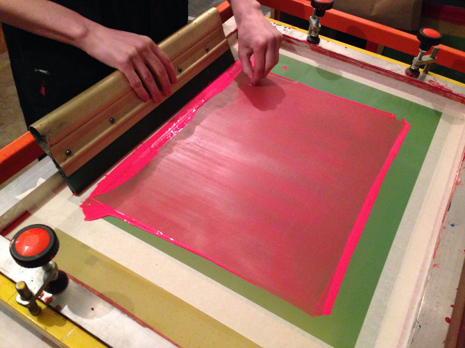
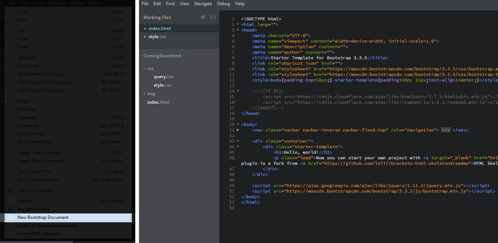

For the last 2 years, I knew this moment will come. The moment that I'll have to go to Web Page Construction class and learn the very scary CODE. The idea freaked me out a bit.
Meantime, I was enjoying my other textiles class like Hand Screen Pinting. I often look for websites that will teach more of Screen Printing process. I love to go to the FIT Screen Printing Lab and work on my proyects.
Once my Web Page Construction class started, I tried my best to focus and understand the basics of code. It takes me some time for the information to sink in. I get it (sort of) at the very end. I know my teacher tries to explains things in the simplest way possible but still I get very confused. There were moments that I felt like throwing the computer away.

Learning about Brackets is a new intense experience and I know that it has just started so I better keep it together. I might need professional therapy after this class is over. On my little research about Brackets Extensions, I found the Bootstrap Skeleton which seems very interesting.
This extension contains HTML- and CSS-based design templates for typography, buttons and other interface components. I know this will ease the development of dynamic websites that is the type I like. I also watched this video "How to add bootstrap skeleton plugin in Bracket" which I haven't tried to do but I will at some point and hopefully I don't make a disaster.